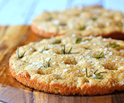
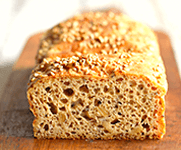
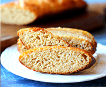
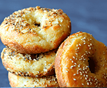
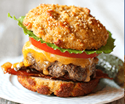
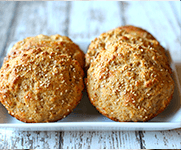

Best Keto Bread Recipes
Start with low-carb breads for sandwiches, toast, quick breakfasts, and pizza night.
- 90-second keto bread
- Fathead dough bread
- Cloud bread and sandwich loaves
Find the best low-carb bread recipes, honest reviews, and fixes for the keto bread problems most sites gloss over.
From 90-second bread to sandwich loaves that hold together, this site helps you bake better keto bread with less trial and error.
Search demand in this niche clusters around recipes, troubleshooting, ingredient-specific bread guides, and buyer-intent comparisons. These pages cover each angle directly.
Start with low-carb breads for sandwiches, toast, quick breakfasts, and pizza night.
Use the troubleshooting guides when your loaf tastes eggy, stays dense, or refuses to rise.
Compare almond flour, coconut flour, and egg-free approaches before you waste ingredients on the wrong method.
See how store-bought keto bread, homemade recipes, and the cookbook stack up on taste, cost, and consistency.
Grab branded 9:16 SVG cards with keto bread recipes, troubleshooting tips, and saveable visuals built for social posts.
Go straight to the bread formats people miss most on keto: burger buns, hot dog buns, toast, and grilled cheese.
Specialty use cases that need a different bread approach: pizza night, naan, wraps, and weekend French toast.
Diagnose dense, eggy, flat, gummy, dry, or crumbly keto bread in under a minute and get a next-batch fix plan.
Try the Free ToolWatching your family enjoy toast and sandwiches while you pick at lettuce wraps that fall apart...
Spent hours on keto bread that came out eggy, rubbery, or like a dense brick. Wasted ingredients. Wasted time.
$8-12 for a tiny loaf of "keto bread" that tastes like cardboard and has suspicious ingredients.
Some days you wonder if keto is even worth it when you can't enjoy something as simple as bread...
Here's the truth: It's NOT your fault. Most keto bread recipes are written by people who don't understand the SCIENCE behind why bread works.
Professional bakers spent 2 years perfecting these recipes. The secret? Understanding the chemistry of how gluten-free flours behave—and mastering it.






↑ Actual recipes from the Keto Breads cookbook — photographed in the test kitchen
"My husband had NO IDEA this was keto bread. He asked me to make it again! After 2 years of failed recipes, I finally found one that works."
"I cried when I took the first bite. Real tears. I've been on keto for 3 years and haven't had bread that tasted this good. It's life-changing."
"Finally, a cookbook that actually delivers. The sandwich bread is incredible—2g net carbs and tastes like the real thing. Worth every penny."
Complete collection of 35+ tested & perfected keto bread recipes
Satisfy your sweet tooth without the sugar crash
Value: $19Crispy, chewy cookies that are completely keto-friendly
Value: $15Decadent chocolate recipes for guilt-free indulgence
Value: $15Total Value: $78
Today's Price: Just $17
You Save $61 (78% OFF)
Try every single recipe. If you don't agree this is the best keto bread you've ever tasted—or if you're unhappy for ANY reason—just email us within 60 days for a full refund. No questions asked. No hassle. You keep the cookbook.
That's how confident we are. The risk is 100% on us.
We understand your skepticism—most keto bread recipes ARE terrible. The difference is science. These recipes were developed by professional bakers who spent 2 years testing flour ratios, binding agents, and techniques specifically to replicate real bread texture. Plus, with our 60-day guarantee, you risk nothing by trying.
No! All ingredients are available at regular grocery stores or Amazon. Most recipes use common keto pantry staples like almond flour, coconut flour, eggs, and butter. No weird chemicals or expensive specialty items.
Absolutely! Each recipe includes step-by-step instructions with photos. We've had complete beginners nail these recipes on their first try. If you can follow instructions, you can make this bread.
Most recipes range from 1-3g net carbs per serving. Every recipe includes complete nutritional information so you can track your macros accurately.
It's a digital cookbook (PDF format) so you get INSTANT access—no waiting for shipping. You can view it on any device, print your favorites, or use it on a tablet in your kitchen.
Join 23,847+ people who've transformed their keto journey
$78 Just $17
Save 78% + Get 3 FREE Bonus Cookbooks
⚠️ Bonus cookbooks may be removed at any time. Lock in your deal today.
Imagine this: Tomorrow morning, you wake up to the smell of fresh bread baking. You slice a warm piece, spread some butter, and take a bite. It's soft. It's fluffy. It tastes like the bread your grandmother used to make.
And then you remember—it's completely keto. You're still on track. You're still losing weight. But now, you're not suffering to do it.
That's the reality for 23,847+ people who got this cookbook.
The only question is: Will you be next?
Yes, I Want Real Bread Again →